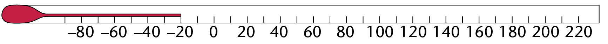
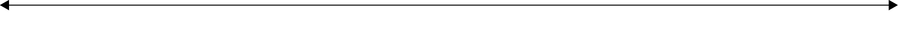
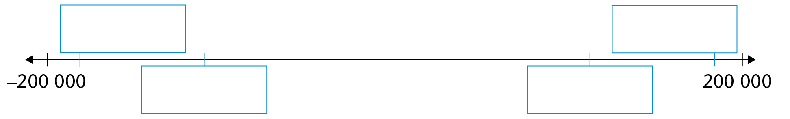

Heelgetalle
In hierdie hoofstuk gaan jy met getalle kleiner as 0 werk. Hierdie getalle word negatiewe getalle genoem. Wiskundiges het ooreengekom dat negatiewe getalle sekere eienskappe behoort te hê wat hulle op verskillende maniere bruikbaar maak. Jy gaan van hierdie eienskappe leer en hoe hulle dit moontlik maak om bewerkings met negatiewe getalle te doen.
Die behoefte aan getalle genaamd heelgetalle
Getalle word vir baie verskillende doeleindes gebruik. Ons gebruik getalle om te sê hoeveel voorwerpe daar in ’n versameling is, byvoorbeeld die getal tafels of banke in ’n klaskamer. Vir hierdie doel gebruik ons die telgetalle 1, 2, 3, 4 . . . Getalle word ook gebruik om grootte te beskryf, byvoorbeeld die lengte van voorwerpe. Vir hierdie doel het ons meer as telgetalle nodig, ons het ook breuke nodig. Nog ’n gebruik van getalle is om posisie aan te dui, byvoorbeeld die posisie van die regtereindpunt van die rooi lyn in die prente hier onder.
Getalle kom ook voor as oplossings van vergelykings. Die natuurlike getalle en breuke bied egter nie oplossings vir alle vergelykings nie. Byvoorbeeld, daar is geen natuurlike getal of breuk wat die vergelyking kan oplos nie. Die getal wat hierdievergelyking oplos, moet die volgende eienskap hê: as jy die getal aftrek, het dit dieselfde effek as om 10 by te tel!
Met die doel om getalle te hê wat meer kan doen as bloot tel en meet, het wiskundiges besluit om ook aan ’n ander soort getal, wat heelgetalle genoem word, te dink. Dieheelgetalle sluit natuurlike getalle in, maar vir elke natuurlike getal, byvoorbeeld 24, is daar nog ’n getal wat die optellingsinverse of additiewe inverse genoem word. So is -24 die optellingsinverse van 24. As jy ’n getal by sy optellingsinverse tel, is die antwoord 0. Dus 24 + (-24) = 0.
Sê hoe koud dit is
Een van die gebruike van heelgetalle is die meting van temperature. As ons sê dat die temperatuur 0 is wanneer water begin vries en ys word, het ons getalle kleiner as 0 nodig om die temperatuur te beskryf as dit nog kouer sou word. As water begin kook, is die temperatuur 100 grade op ’n skaal wat die Celsiusskaal genoem word.
Vloeistowwe sit uit wanneer hulle verhit word en krimp in as hulle afkoel. Wanneer dit dus warm is, kan ’n vloeistof in ’n dun buisie amper die hele buisie vol maak:

Wanneer dit koud is, sal die kolom vloeistof baie kort wees.
Hierdie eienskap van vloeistof word gebruik om temperatuur te meet. ’n Instrument soos die een hier bo word ’n termometer genoem.
Dit is wat ’n termometer sal wys as dit in kokende water gesit word. Dit wys ’n temperatuur van 100 grade Celsius, wat ons skryf as 100 °C.
Op die skets hier onder kan jy sien wat ’n termometer sal wys as dit in water is wat begin vries. Dit wys ’n temperatuur van 0 °C.
Op die volgende skets kan jy sien wat ’n termometer sal wys as die temperatuur -40 °C is, wat kouer is as enige wintersnag wat jy nog ooit beleef het!

1. Skryf die temperatuur wat die termometers hier onder wys neer.

(a)
(b)

(c)

(d)
(e)

(f)
2. (a) Die temperatuur van water in ’n pot is 20 °C. Dit word verhit totdat dit 30 °Cwarmer is. Wat is die temperatuur van die water nou?
(b) Die temperatuur van water in ’n bottel is 80 °C. Gedurende die nag koel dit tot30 °C af. Met hoeveel grade het dit afgekoel?
(c) In die middel van ’n baie koue wintersnag is die temperatuur buite -20 °C. Teennege-uur die volgende oggend het dit 30 grade warmer geword. Wat is dietemperatuur om nege-uur?
3. (a) Die temperatuur is 8 °C . Wat sal die temperatuur wees as dit 10 grade kouerword?
(b) Die temperatuur is 8 °C. Wat sal die temperatuur wees as dit 20 grade kouerword?
(c) Die temperatuur is -8 °C. Wat sal die temperatuur wees as dit 10 grade warmerword?
(d) Die temperatuur is -24 °C. Wat sal die temperatuur wees as dit 10 grade warmerword?
4. Vul die ontbrekende getalle op die getallelyne in.


Sê hoeveel geld dit is
Simon is in graad 5. Hy het geld in ’n spaarblikkie gespaar. Toe hy 10 geword het, het sy ouma vir hom R100 gegee. Daardie dag het hy ook sy blikkie oopgemaak en daar was R260 in die blikkie. Simon was baie bly. Hy het vir homself gesê: “Ek is baie ryk!”
Hy besluit om ’n paar goed, wat hy altyd wou hê, met die geld te koop. Dit is wat hy wil koop:
- ’n sokkerbal teen R160
- ’n sonbril teen R180
- ’n boek oor diere teen R90
1. Hoeveel geld het Simon altesaam op die dag gehad toe hy gedink het dat hy baie ryk was?
2. Hoeveel kos die drie items wat hy wil hê altesaam?
3. Simon besluit om eers net die sokkerbal te koop. Hoeveel geld sal hy dan oorhê?
4. Hoeveel geld sal hy hê as hy die sokkerbal en die sonbril koop?
5. Hoeveel geld sal hy hê as hy die sokkerbal, die sonbril en die diereboek koop?
Toe Simon daaraan gedink het om die items te koop, het hy soos volg gereken:
R360 - R160 = R200
R200 - R180 = R20
R20 - R90 = (-) R70 ?
6. Fatima besit ’n klein winkeltjie. Een aand met sluitingstyd het sy R120 kontant gehad, haar klante het haar R90 geskuld en sy het haar verskaffers R310 geskuld. Volgens Fatima was haar finansiële posisie soos volg: R120 + R90 - R310 = -R100.
(a) Aan die einde van ’n ander dag het Fatima afgesluit met R210 kontant, klante het haar R180 geskuld en sy het haar verskaffers R160 geskuld. Wat was haarfinansiële posisie daardie dag?
(b) Op nog ’n dag het Fatima afgesluit met R150 kontant, klante het haar R130geskuld en sy het R460 geskuld. Wat was haar finansiële posisie daardie dag?
Omtrent 500 jaar gelede het ’n klompie wiskundigesvoorgestel dat ’n “negatiewe getal” gebruik kan wordom die resultaat in ’n situasie soos die een hier bo,te beskryf. Dit is wanneer ’n getal van ’n kleiner getalafgetrek moet word.
Wiskundiges is mense wat wiskunde vir ’n lewe doen. Wiskunde is hulle werk, soos gesondheidsorg die werk of professie van dokters en verpleegsters is.
Ons kan byvoorbeeld sê 10 - 20 = (-10)
Hierdie voorstel is spoedig deur ander wiskundiges aanvaar en dit word nou oor die hele wêreld gebruik.
7. Voltooi die lyste van getalle in die tabel.
|
(a) |
(b) |
(c) |
(d) |
(e) |
(f) |
(g) |
|
10 |
100 |
3 |
-3 |
-20 |
150 |
0 |
|
9 |
90 |
6 |
-6 |
-18 |
125 |
-5 |
|
8 |
80 |
9 |
-9 |
-16 |
100 |
-10 |
|
7 |
70 |
12 |
-12 |
-14 |
75 |
-15 |
|
6 |
60 |
15 |
-15 |
50 |
-20 |
|
|
5 |
50 |
-25 |
||||
|
4 |
40 |
|||||
|
3 |
30 |
|||||
|
2 |
20 |
|||||
|
1 |
10 |
|||||
|
0 |
0 |
|||||
|
-1 |
||||||
8. Bereken die volgende:
(a) 16 - 20 =
(b) 16 - 30 =
(c) 16 - 40 =
(d) 16 - 60 =
(e) 16 - 200 =
(f) 5 - 1 000 =
9. Jeminah het R200 in ’n spaarrekening en R40 in haar beursie. Haar broer skuld haar R50. Hoe ryk is sy?
10. Oeps! Jeminah het vergeet dat sy R60 by haar ma geleen het en dat sy nog R150 op ’n rok skuld wat sy die vorige maand gekoop het. Hoeveel geld het sy in werklikheid?
11. Jeminah se finansiële posisie is egter nog swakker. Sy het ook ’n uitstaande rekening by haar dokter van R250. Hoeveel geld het sy in werklikheid?
Rangskik en vergelyk heelgetalle
1. Op ’n dag het die weerburo die volgende minimum temperature vir die volgende plekke voorspel:
Bethlehem -4 °C Bloemfontein -6 °C
Kaapstad 7 °C Dordrecht -9 ☐C
Durban 12 °C Johannesburg 0 °C
Pretoria 4 °C Queenstown -1 °C
Rangskik die temperature van die koudste tot die warmste.
2. Posisioneer die volgende getalle so akkuraat as moontlik op die getallelyn:
50; -2; -23; 5; -36

3. Plaas die getalle in die korrekte boksies:
(a) 125 000; -178 000; -100 900; 180 500

(b) -1 055 500; -1 010 100; -1 100 100; -1 032 800; -1 077 500
4. Vul die simbool > of < in elke blokkie in om aan te dui watter getal die kleiner een van die twee is.
(a) 978 543 ☐ 978 534
(b) -1 043 724 ☐ -1 034 724
(c) -864 026 ☐ -864 169
(d) -103 232 ☐ -104 326
(e) -710 742 ☐ 710 741
(f) -904 700 ☐ -904 704
Soek getalle wat stellings waar maak
Die getalle 1, 2, 3, 4 en so aan wat ons gebruik om te tel, word natuurlike getalle genoem. Natuurlike getalle is heelgetalle - hulle bevat geen breuke nie.
1. Is daar ’n natuurlike getal wat in die hakies geskryf kan word om die stelling waar te maak?
\(12 + ( .......... ) = 17 \)
2. Skryf ’n natuurlike getal in die spasie tussen die hakies om die getalsinne waar te maak.
(a) \(15 + ( .......... ) = 21 \)
(b) \(15 - ( .......... ) = 10 \)
(c) \(( .......... ) + 10 = 34 \)
(d) \(( .......... ) - 10 = 34 \)
Hierdie is ’n ander manier om dieselfde vrae te vra:
(a) Wat is \(x\) as \(15 + x = 21\)?
(b) Wat is \(x\) as \(15 - x = 10\)?
(c) Wat is \(x\) as \(x + 10 = 34\)?
(d) Wat is \(x\) as \(x - 10 = 34\)?
(e) Wat is \(x\) as 3 \times \(x = 18\)?
3. (a) Kan jy aan ’n natuurlike getal dink wat hierdie stelling waar sal maak?
2 \times ( .... ) = 5
(b) Kan jy aan ’n ander getal dink wat die stelling waar sal maak?
4. (a) Kan jy aan ’n natuurlike getal dink wat diestelling waar sal maak?
8 + ( .... ) = 5
(b) Kan jy aan ’n ander getal dink wat diestelling waar sal maak?
Ons dink normaalweg aan optel of bytel as iets wat groter maak. Vraag 4(a) dwing ons om anders te dink, om die moontlikheid te oorweeg dat om op te tel of by te tel ook iets kleiner kan maak.
Ons soek ’n getal om die volgende stelling waar te maak:
8 + ( .... ) = 5
Wat van hierdie plan?Laat ons ooreenkom om hierdie getal negatief 3 te noem, en ons skryf dit (-3). As ons saamstem, kan ons sê dat 8 + (-3) = 5.
Dit mag vir jou snaaks lyk. Jy hoef ook nie saam te stem nie. Maar kom ons kyk nogtans hoe die plan by ander getalle mag werk, al stem jy nie nou saam nie. Watter antwoorde sal iemand wat wel met die plan saamgaan op die volgende vrae hê?
5. Bereken:
Wat kan die antwoorde van die volgende wees?
5 + (-8)
(-5) + (-8)
(a) 10 + (-3)
(b) 12 + (-3)
(c) 12 + (-5)
(d) 10 + (-9)
(e) 8 + (-8)
(f) 1 + (-1)
Jy stem waarskynlik saam dat
\(5 + (-5) = 0 \\ 10 + (-10) = 0 \text{ en } \\ 20 + (-20) = 0\)
Ons kan sê dat daar vir elke “positiewe” getal ’n ooreenkomstige of teenoorgesteldenegatiewe getal bestaan. Twee positiewe en negatiewe getalle wat ooreenkom, soos byvoorbeeld 3 en (-3), word optellingsinverses of additiewe inverses genoem. As jy hulle optel, kanselleer hulle mekaar.
Die getal nul word ook as ’n heelgetal beskou.
Wanneer jy enige getal by sy optellingsinverse tel, is die antwoord 0, byvoorbeeld 120 + (-120) = 0.
Die versameling heelgetalle sluit dus al die natuurlike getalle en hul optellingsinverses sowel as nul in.
6. Skryf die optellingsinverse van die volgende getalle neer:
(a) 24
(b) -24
(c) -103
(d) 2 348
Ons kan met behulp van optellingsinverses verklaar hoekom 8 + (-5) gelyk is aan 3:
8 + (-5) = 3 + 5 + (-5) = 3 + 0 = 3
7. Gebruik optellingsinverses om te verduidelik hoekom die volgende waar is:
(a) 43 + (-30) = 13
(b) 150 + (-80) = 70
8. Bereken:
Natuurlike getalle kan in enige volgorde gerangskik word as ons optel of aftrek. Dit sal dinge vergemaklik as ons saamstem dat dit ook vir negatiewe getalle die geval behoort te wees.
(a) 10 + 4 + (-4)
(b) 10 + (-4) + 4
(c) 3 + 8 + (-8)
(d) 3 + (-8) + 8
9. Bereken:
(a) 18 + 12 =
(b) 12 + 18 =
(c) 2 + 4 + 6 =
(d) 6 + 4 + 2 =
(e) 2 + 6 + 4 =
(f) 4 + 2 + 6 =
(g) 4 + 6 + 2 =
(h) 6 + 2 + 4 =
(i) 6 + (-2) + 4 =
(j) 4 + 6 + (-2) =
(k) 4 + (-2) + 6 =
(l) (-2) + 4 + 6 =
(m) 6 + 4 + (-2) =
(n) (-2) + 6 + 4 =
10. Bereken:
(a) (-5) + 10
(b) 10 + (-5)
(c) (-8) + 20
(d) 20 - 8
(e) 30 + (-10)
(f) 30 + (-20)
(g) 30 + (-30)
(h) 30 + (-40)
(i) 10 + (-5) + (-3)
(j) (-5) + 7 + (-3) + 5
(k) (-5) + 2 + (-7) + 4
11. Watter getal maak die stelling waar? Gee jou antwoord as ’n geslote getalsin.
Stellings soos hierdie word ook getalsinne genoem.
’n Onvoltooide getalsin, waar sommige getalle aanvanklik nie bekend is nie, word soms ’n oop getalsin genoem:
8 - (’n getal) = 10
’n Geslote getalsin is waar al die getalle bekend is:
8 + 2 = 10
(a) 20 + (’n onbekende getal) = 50
(b) 50 + (’n onbekende getal) = 20
(c) 20 + (’n onbekende getal) = 10
(d) (’n onbekende getal) + (-25) = 50
(e) (’n onbekende getal) + (-25) = (-50)
12. Gebruik die idee van optellingsinverses om te verduidelik hoekom elkeen van die volgende stellings waar is:
(a) 43 + (-50) = -7 (b) 60 + (-85) = -25
Stellings wat waar is vir baie verskillende getalle
Vir hoeveel verskillende pare getalle kan die volgende stelling waar wees, as slegs natuurlike (positiewe) getalle toegelaat word? vyf paar
’n getal + ’n ander getal = 10
Vir hoeveel verskillende pare getalle kan die stelling waar wees as negatiewe getalle ook toegelaat word? ’n oneindige getal pare
Optel en aftrek van heelgetalle
Eienskappe van heelgetalle
1. Bereken:
(a) 80 + (-60) =
(b) 500 + (-200) + (-200) =
2. (a) Stem jy saam dat 20 + (-5) = 15?
(b) Wat dink jy behoort die antwoord van
20 - (-5) te wees?
Ons dink gewoonlik aan optel en aftrek as bewerkings wat die teenoorgestelde uitwerking het: wat die een doen, is die teenoorgestelde of inverse van wat die ander doen.
3. (a) Is 100 + (-20) + (-20) = 60, of is dit gelyk aaniets anders?
(b) Wat dink jy is die antwoord van (-20) + (-20)?
4. Voltooi so ver as jy kan:
|
(a) |
(b) |
(c) |
|
5 - 9 = |
5 + 9 = |
9 - 3 = |
|
5 - 8 = |
5 + 8 = |
8 - 3 = |
|
5 - 7 = |
5 + 7 = |
7 - 3 = |
|
5 - 6 = |
5 + 6 = |
6 - 3 = |
|
5 - 5 = |
5 + 5 = |
5 - 3 = |
|
5 - 4 = |
5 + 4 = |
4 - 3 = |
|
5 - 3 = |
5 + 3 = |
3 - 3 = |
|
5 - 2 = |
5 + 2 = |
2 - 3 = |
|
5 - 1 = |
5 + 1 = |
1 - 3 = |
|
5 - 0 = |
5 + 0 = |
0 - 3 = |
|
5 - (-1) = |
5 + (-1) = |
(-1) - 3 = |
|
5 - (-2) = |
5 + (-2) = |
(-2) - 3 = |
|
5 - (-3) = |
5 + (-3) = |
(-3) - 3 = |
|
5 - (-4) = |
5 + (-4) = |
(-4) - 3 = |
|
5 - (-5) = |
5 + (-5) = |
(-5) - 3 = |
5. Bereken:
(a) 20 - 20 =
(b) 50 - 20 =
(c) (-20) - (-20) =
(d) (-50) - (-20) =
6. Stel by elke vraag ’n getal voor wat die stelling waar sal maak. Gee ook ’n rede vir jou voorstel.
(a) 20 + (’n getal) = 8
(b) 20 + (’n getal) = 28
(c) 20 - (’n getal) = 28
(d) 20 - (’n getal) = 12
’n bietjie geskiedenis
Die volgende stelling is waar as die getal 5 is:
\[15 - (’n~ sekere~ getal) = 10\]
’n Paar eeue gelede het ’n klompie wiskundiges besluit dat hulle getalle wou hê om sinne soos die volgende waar te maak:
\[15 + (’n~ sekere~ getal) = 10\]
Maar om van 15 by 10 uit te kom, moet jy 5 aftrek.
Die getal wat ’n mens nodig het om die sin \(15 + (’n~ sekere~ getal) = 10\) waar te maak, moet die volgende vreemde eienskap hê:
As jy hierdie getal bytel, moet dit dieselfde effek hê as wanneer jy 5 aftrek.
Die wiskundiges het toe so gedink:
“Kom ons besluit tussen onsself dat die getal wat ons negatief 5 noem,
die volgende eienskap sal hê as jy dit by ’n ander getal tel: die effek sal
dieselfde wees as wanneer jy die natuurlike getal 5 aftrek.”
Dit beteken dat die wiskundiges ooreengekom het dat 15 + (-5) gelyk is aan 15 - 5. Met ander woorde: in plaas daarvan om negatief 5 by ’n getal te tel, mag jy 5 aftrek.
Ons kan saamstem dat wanneer ons ’n negatiewe getal aftrek, ons dieselfde antwoord kry as wanneer ons die negatiewe getal se optellingsinverse bytel. As ons by hierdie ooreenkoms hou, behoort die volgende twee berekeninge dieselfde antwoord te hê:
10 - (-7) en 10 + 7
7. Bereken.
(a) 20 - (-10) =
(b) 100 - (-100) =
(c) 20 + (-10) =
(d) 100 + (-100) =
(e) (-20) - (-10) =
(f) (-100) - (-100) =
(g) (-20) + (-10) =
(h) (-100) + (-100) =
8. Voltooi so ver as jy kan:
|
(a) |
(b) |
(c) |
|
5 - (-9) = |
(-5) + 9 = |
9 - (-3) = |
|
5 - (-8) = |
(-5) + 8 = |
8 - (-3) = |
|
5 - (-7) = |
(-5) + 7 = |
7 - (-3) = |
|
5 - (-6) = |
(-5) + 6 = |
6 - (-3) = |
|
5 - (-5) = |
(-5) + 5 = |
5 - (-3) = |
|
5 - (-4) = |
(-5) + 4 = |
4 - (-3) = |
|
5 - (-3) = |
(-5) + 3 = |
3 - (-3) = |
|
5 - (-2) = |
(-5) + 2 = |
2 - (-3) = |
|
5 - (-1) = |
(-5) + 1 = |
1 - (-3) = |
|
5 - 0 = |
(-5) + 0 = |
0 - (-3) = |
|
5 - 1 = |
(-5) + (-1) = |
(-1) - (-3) = |
|
5 - 2 = |
(-5) + (-2) = |
(-2) - (-3) = |
|
5 - 3 = |
(-5) + (-3) = |
(-3) - (-3) = |
|
5 - 4 = |
(-5) + (-4) = |
(-4) - (-3) = |
|
5 - 5 = |
(-5) + (-5) = |
(-5) - (-3) = |
9. Is die volgende stellings waar of vals? Gee ’n numeriese voorbeeld om jou antwoord te demonstreer.
(a) Om ’n positiewe getal van ’n negatiewe getal af te trek, het dieselfde effek as omdie optellingsinverse van die positiewe getal by te tel.
(b) Om ’n negatiewe getal by ’n positiewe getal te tel, het dieselfde effek as om dieoptellingsinverse van die negatiewe getal by te tel.
(c) Om ’n negatiewe getal van ’n positiewe getal af te trek, het dieselfde effek as omdie optellingsinverse van die negatiewe getal af te trek.
(d) Om ’n negatiewe getal by ’n positiewe getal te tel, het dieselfde effek as om dieoptellingsinverse van die negatiewe getal af te trek.
(e) Om ’n positiewe getal by ’n negatiewe getal te tel, het dieselfde effek as om dieoptellingsinverse van die positiewe getal by te tel.
(f) Om ’n positiewe getal by ’n negatiewe getal te tel, het dieselfde effek as om dieoptellingsinverse van die positiewe getal af te trek.
(g) Om ’n positiewe getal van ’n negatiewe getal af te trek, het dieselfde effek as omdie optellingsinverse van die positiewe getal af te trek.
(h) Om ’n negatiewe getal van ’n positiewe getal af te trek, het dieselfde effek as omdie optellingsinverse van die negatiewe getal by te tel.
Eienskappe van bewerkings
1. Bereken:
(a) (-3) + (-5) =
(b) (-5) + (-3) =
(c) 5 + (-7) =
(d) (-7) + 5 =
(e) (-13) + 17 =
(f) 17 + (-13) =
(g) 15 + 19 =
(h) 19 + 15 =
(i) (-21) + (-15) =
(j) (-15) + (-21) =
In Hoofstuk 1 van Boek 1 (wat oor telgetalle gaan) het ons gesê:
Optel is kommutatief: die getalle kan omgeruil word.
Of, met simbole: \(a + b = b + a\), waar a en b telgetalle is.
2. (a) Sou jy sê dat optel ook kommutatief is wanneer die getalle heelgetalle is?
(b) Verduidelik jou antwoord.
3. Bereken:
(a) 9 - 5 =
(b) 5 - 9 =
(c) (-7) - 3 =
(d) 3 - (-7) =
(e) 15 - (-12) =
(f) (-12) - 15 =
(g) (-40) - (-23) =
(h) (-23) - (-40) =
4. (a) Dink jy aftrek is kommutatief?
(b) Verduidelik jou antwoord.
In Hoofstuk 1 van Boek 1 het ons ook gesê:
Wanneer drie of meer telgetalle bymekaargetel word, maak die manier waarop jy die getalle groepeer geen verskil nie. Ons sê: Optel is assosiatief.
5. Dink jy optel is ook assosiatief wanneer ons met heelgetalle werk? Stel ondersoek in.